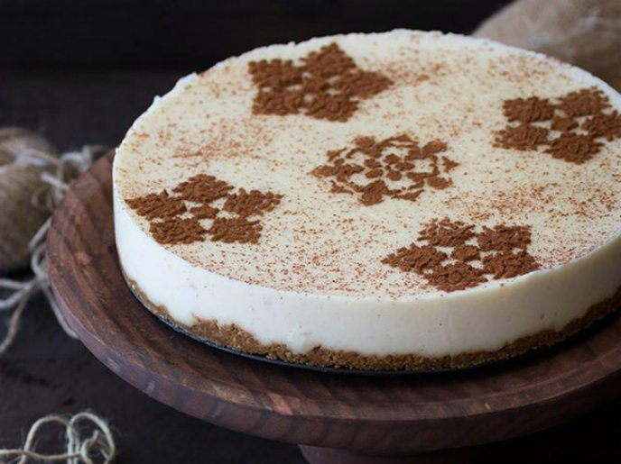
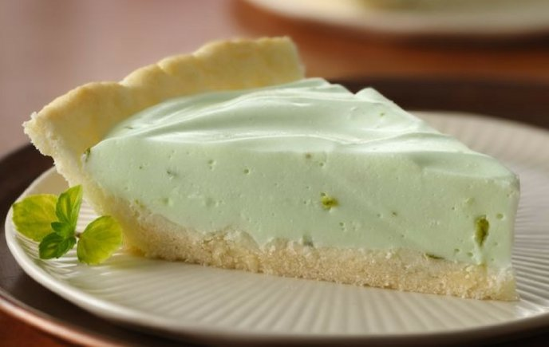

Pay de arroz con leche

Ingredientes
Para la costra:
2 tazas de galletas de canela molidas, 1/4 de taza de mantequilla derretida.
Para el relleno:
1 taza de arroz remojado con agua caliente, 2 tazas de leche entera, 1 1/2 tazas de leche evaporada, 1/2 taza de leche condensada, 2 cucharadas de vainilla, 1/2 taza de azúcar morena, ½ taza de pasitas, 2 rajas de canela, 1 cucharada de grenetina natural hidratada, Canela en polvo.
Preparación
Mezcla las galletas molidas con la mantequilla hasta obtener una masa que se apelmace.
Agrega la mezcla de galleta a un molde y aplana realizando una base uniforme.
3.Refrigera el molde mínimo 1 hora o hasta que la base se haya endurecido.
Calienta en una cacerola la leche entera, evaporada y condensada; agrega el azúcar, el arroz, las raja de canela y la esencia de vainilla.
por 30 minutos y agrega las pasitas; termina de cocer el arroz por 10 minutos más o hasta que el arroz esté suave. Retira las rajas de canela.
Licua la mitad de la preparación con la grenetina hidratada, pasa a otro recipiente e incorpora el resto del arroz.
Agrega la mezcla del arroz y vierte sobre la base de galleta. Refrigera por 2 horas o hasta que el pay se cuaje.
Sirve y decora con canela.
Pay de limón

Ingredientes
2 tubos de galleta María, 1 lata de leche evaporada, 1 lata de leche condensada, 6 limones.
Preparación
Exprime los limones para tener el jugo de limón sin semillas.
Licua la leche evaporada, la leche condensada y el limón hasta que quede una crema.
En un refractario o molde acomoda una capa de galletas marías como base y añade la crema anteriormente preparada y repite el proceso hasta llegar al tope del recipiente.
Refrigera durante 2 horas y sirve.